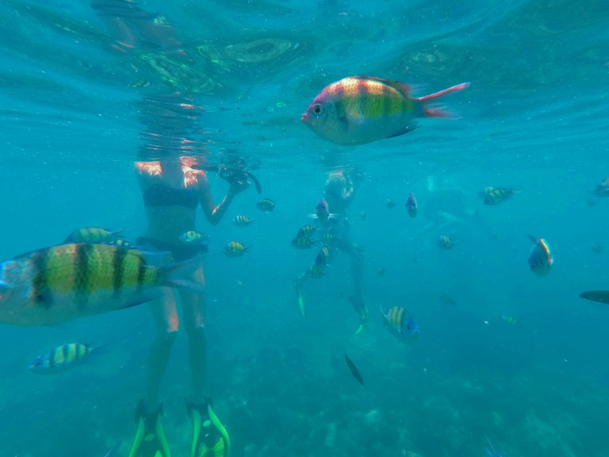

La nostra avventura sta giungendo a termine, e il nostro itinerario prevedeva di passare quasi due settimane su qualche isola della Thailandia. Avendo risalito la Malesia sulla costa occidentale, abbiamo deciso di fermarci prima sull’isola di Ko Lanta per 5-6 giorni, poi di spostarci alle famose Phi Phi Islands; sia Ko Lanta che le Ko Phi Phi (“Ko” in thailandese significa “isola“) si trovano nel mare delle Andamane a poche ore di distanza in traghetto.
Siccome l’isola di Lanta è piuttosto grande e molte zone sono ancora intoccate dal turismo di massa che abbiamo riscontrato più volte durante il nostro viaggio, abbiamo deciso di noleggiare uno scooter per poterci spostare facilmente da un posto all’altro senza dover rivolgerci ai tuk-tukkari ogni giorno. Abbiamo pianificato i nostri 5 giorni sull’isola in modo da poter visitare ogni giorno una spiaggia diversa o per poter partecipare a delle escursioni sul mare in barca.
Ma partiamo dall’inizio…
Phra Ae Beach
Questa era probabilmente la spiaggia più turistica e attrattiva di tutte: una lunga spiaggia di sabbia in cui gli alberi della foresta sulla riva del mare offrivano un riparo dal sole ai bagnanti, tantissimi ristorantini a cielo aperto direttamente sulla spiaggia in cui oltre a servire cocktail e pietanze di ogni genere, di sera offrono ai clienti uno spettacolo pirotecnico davvero incredibile.
Oltre a ciò, siccome la spiaggia si trovava nella zona nord dell’isola (la parte in cui si trovano la maggior parte degli alberghi e dei campeggi, il nostro compreso), abbiamo passato qui vari pomeriggi a rilassarci, fare snorkeling e ammirando splendidi tramonti.
Bamboo Beach
La zona sud dell’isola è praticamente incontaminata: qui risiede infatti un parco nazionale e ci sono pochissime sistemazioni, sia per turisti che per i locali.
Avendo sentito parlare così bene della spiaggia di Bamboo, non abbiamo esitato un attimo a saltare in sella allo scooter e dirigerci a sud! Dopo quasi un’ora di strada (e che strada… salite che quasi quasi la potenza del nostro mezzo non bastava per andare avanti, e al contrario, discese che hanno messo a dura prova i nostri freni!!) siamo arrivati alla spiaggia! A differenza di Phra Ae Beach, questa spiaggia era più piccolina e, siccome difficilmente raggiungibile a causa della scogliera molto ripida, c’erano solo un paio di ristorantini nei suoi dintorni.
Tranquillità assoluta e natura.. Penso che questa descrizione sia la più approriata per questa spiaggia! Purtroppo, a causa della marea e siccome il mare è poco profondo, già nel primo pomeriggio quasi la totalità della spiaggia ha rivelato delle stutture rocciose che limitavano l’accesso all’acqua.
Purtroppo non siamo rimasti su questa spiaggia fino al tramonto per paura di tornare sulla strada completamente di notte.. Sul ritorno ci siamo anche fermati a fare benzina in uno dei distributori di benzina dell’isola…
Four Islands Tour
Vicino alla grande isola di Lanta c’è un piccolo gruppo di isolette raggiungibili solamente con piccoli battelli con partenza da Ko Lanta. Quasi tutte queste isolette sono disabitate e solamente su poche sorge qualche albergo per i turisti che cercano la tranquillità più assoluta.
Noi abbiamo deciso di partecipare ad un’escursione che avrebbe visitato quattro di queste isolette e che sarebbe durata una giornata intera. Durante questa escursione in barca abbiamo avuto più volte l’occasione di fare snorkeling in delle acque stupende: acque che sulle coste di Ko Lanta non abbiamo visto! Nonstante fossimo poco più di venti persone, abbiamo potuto fare il bagno praticamente immersi in centinaia di pesciolini curiosi senza che si spaventassero e scappassero via. Entrambi siamo rimasti molto stupiti di quanti pesciolini ci fossero nel mare!!
Una delle isole disabitate che abbiamo visitato era molto particolare: non c’erano spiagge o zone ideali per sbarcare sulla terra ferma, solo una grotta marina che, se attraversata, portava ad una baia interna all’isola. Attraversare la grotta è stato molto intenso: buio totale, molta gente che nuotava nei tuoi immediati dintorni, un senso di disorientamento e l’inconsapevolezza di quando ancora avremmo dovuto nuotare per arrivare alla baia! Date un’occhiata al video per vedere con i vostri occhi in che posto sorprendente (purtroppo pienissimo di altri turisti) siamo arrivati attraversando la grotta!
L’ultima isola che abbiamo visitato aveva una spiaggia da sogno: acqua cristallina, tranquillità assoluta e poca gente.. un luogo perfetto per rilassarsi!!
Il nostro soggiorno a Ko Lanta è stato molto molto bello! Entrambi ci siamo davvero trovati bene sull’isola, forse anche un po’ perche dopo essere stati in giro così a lungo in nazioni mai visitate prima, sentire di essere tornati in Thailandia era un po’ come sentir di tornare a casa..
Ah, quasi dimenticavo di presentarvi Tiger: il gatto del padrone dell‚Äôalbergo in cui siamo stati che di mattino ogni tanto si presentava fuori dal balcone per farsi coccolare üòÄ
Comment Section